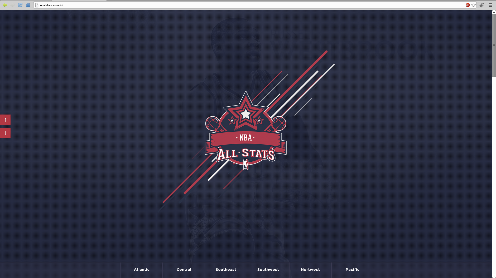
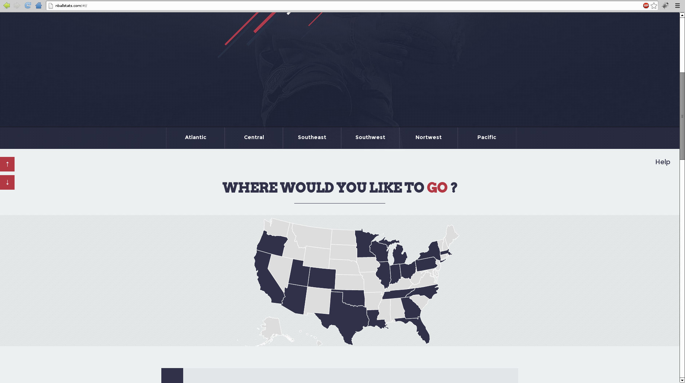
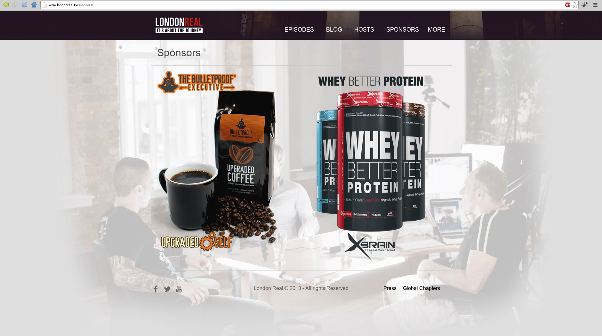
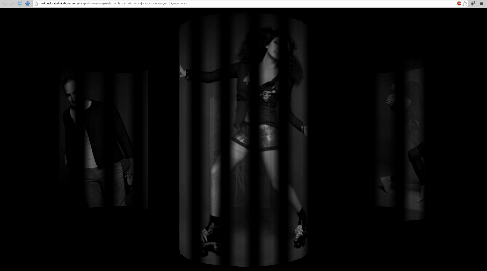
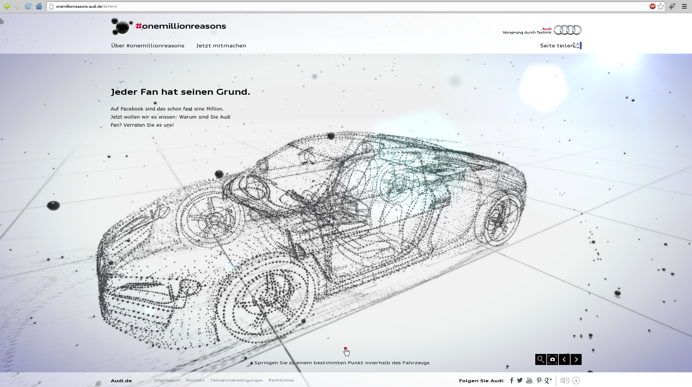
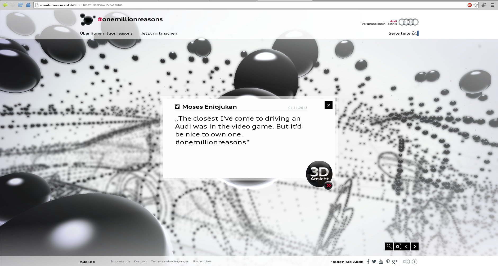
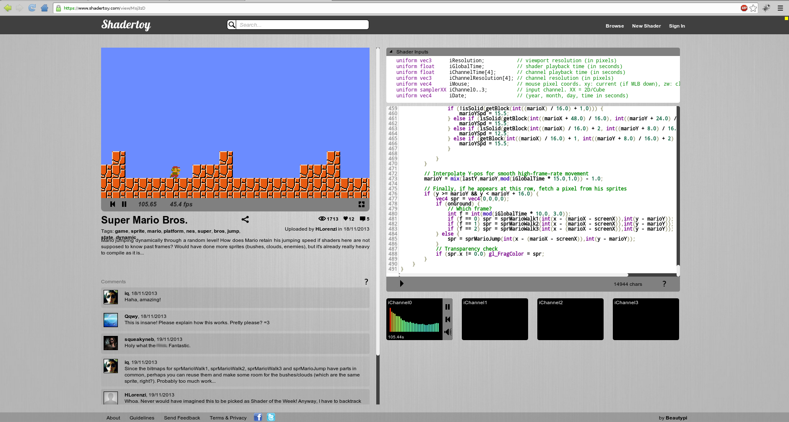
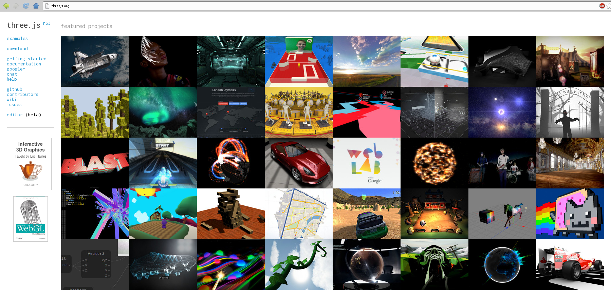

Fancy Web Graphics
Dr Anton Gerdelan (gerdela@tcd.ie)
Some reflections on how website design has changed in the last 5 years.
Slides at https://antongerdelan.net/teaching/,
and I'll put them on the course page (when I figure out how...).
About Me
- From New Zealand. Did part of my PhD here with GV2 (graphics, vision, visualisation) group.
- Lectured 3d graphics and visualisation in Sweden last year (Blekinge Tekniska Högskola).
- Have a series of OpenGL tutorials on my website:
https://antongerdelan.net/opengl/
- Labs for 4th-year graphics this year.
- Making a video game in my spare time.
- PostDoc for Dave Lewis. WebGL visualisation interface for smart buildings.
Modern Website Design

- Minimalist, "clean" looks.
- Giant, hi-res image backgrounds - bandwidth no longer a bottleneck - 4G mobile networks
- "All-on-one-page" design with swipe/scroll transitions - tablet swipe/intuitive - coffee-table
book format.
- Interactive elements - information visualisations - entertainment (micro-games) - gimmicks

- People are sick of annoying, invasive, trashy-looking (and sometimes offensive) targeted (Google/Amazon/Facebook) advertisements - Adblock plug-ins
- How do these websites commercialise in an elegant way? (Without disrupting the "user experience").

- Number-of-clicks-to-payment
- Video promotions with real people in them (Kickstarters etc.)
- Meaningful connected deals (i.e. vouchers) and promotions.
- User opt-in to email and mobile/txt notifications of "watched" deals
Recent Web Technology Changes
-
Flash (and Silverlight) is on the way out. HTML5 is dominating
- Better audio/video playback with HTML5 - Youtube - no plug-ins
- HTML5 more pervasive because it has less restrictions (i.e. Flash on Apple devices)
- Plugins that use graphics hardware (much much much faster)
- Browser-side stuff is more useful because dual-core/quad-core CPUs
- Nobody uses Java web-applets any more
Web Technology that is Still Horrible
| Name | Score (/100) |
| Ron | 101 |
| Brick | -100 |
| Brian | 8 |
| Champ | 1 |
|
|
- HTML is still a terrible formatting tool.
- Tables
- Paragraph margins
- Margins in general
- Fonts
- Multi-column layouts
- You will need to use bits and pieces of hacked-in technology to help:
- CSS (also horrible)
- JavaScript DOM with AJAX etc. (very prone to errors, messy)
- PHP
- Use minimally
Change in Mode of Use of Websites
- "experiences" to promote exhibitions of new work or new products.
- tablet-friendly browsing
- less Wordpress, more interactive thingies/widgets, audio
- 3d previews and architectural walk-throughs
- design-in-browser - furniture, clothing colours, custom designs, 3d printing
Are we half way through the time? If so break.
WebGL and the GPU
The Little Black Jacket - Coco Chanel

Audi "One Million Reasons"


What is a GPU? Why is WebGL Good?
- My little model viewer thingy https://antongerdelan.net/3dmodelviewer/
- Google maps/Google earth
- WebGL lets us access the graphics programming unit (GPU) to draw
- Massively parallel processing (up to 2000 points of a mesh or colours at once)
- Put an HTML5 canvas onto webpage. Tell WebGL to draw onto canvas
- Graphics programmes run on GPU are called "Shaders" - written in GLSL
- Super super super fast compared to Flash etc.
- Use a bit of JavaScript to tie it together
Shader Toy
- https://www.shadertoy.com/
- Tool to play with shaders directly in browser
- Gives feedback on any errors and mistakes under relevant lines
- Can publish cool demos - sort of reminiscent of 1980s/90s Demoscene

Three.js API
- http://threejs.org
- API to make it easy to get into WebGL without years of experience
- Some JavaScript background would be helpful
- Lots of demos on website

Lab Next Wednesday
- JavaScript debugging example (I'll put one up)
- I can also help with projects
My Plan for Next Time - Helpful?
- Three.js - Intro to 3d on the Web
- Something else that would help? - email me gerdela@scss.tcd.ie